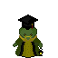

ぎんこう
About
JAPANESE
Vocabulary
Katakana Alphabet
Hiragana Alphabet
Particles
Sentence Structure
SPANISH
Vocabulario
Morfología
Estudia los componentes que se usa para formar palabras.
Sintaxis
El estudio de la estructura de las oraciones.
Morfemas
Las unidades mínimas significativos que forman las palabras.
Son raices o afijos.
Ajifos
Prefijos que van enfrente de la palabra o sufijos que van adjunto al final de la palabra.
Ejemplo: caerse
caer = raíz
se = sufijo
へ
日本
へ
行
きます。
I will go to Japan.
で
メキシカンレストランでタコスを
食
べます。
へ
行
きました。
I went to the movie theater.
を
Indicates object associated with a verb.
-Example-
アイスクリーム
を
食
べました。
I ate icecream.
と
Indicates noun linkage.
-Example-
スパゲッティ
と
パンを食べます。
I eat spaghetti and bread.
Where do you place your sentence markers? Learn more
here!
